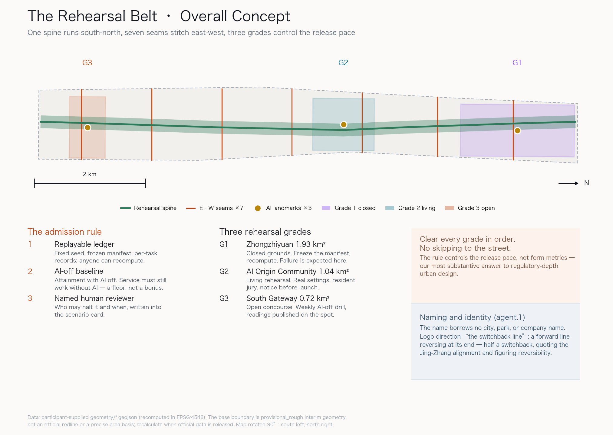
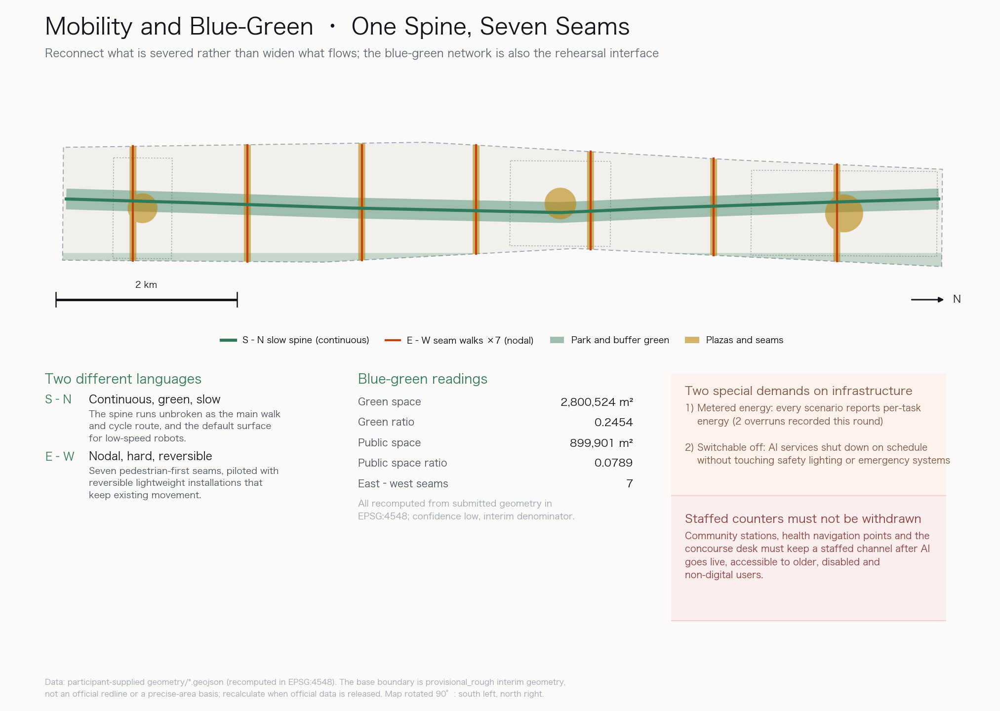

The Rehearsal Belt: rehearse before you deploy
Centennial Jing-Zhang AI Innovation Belt open call · formal submission exhibit · BinHPdev
01Overview map
One spine runs south-north, seven seams stitch east-west, three grades control the release pace.

02Three-level scope
The three levels are three different burdens of proof, not three drawing scales.
Coordinated research area · ~43.6 km²
Trend judgements and coordination proposals only; no parcel-level conclusions.
Overall design area · ~11.4 km²
Land-use structure, slow-mobility frame, blue-green system, public space network, phasing.
Key detailed design · 3 areas, ~3.69 km²
Scenario-space-operation mapping and per-task rehearsal readings.
03Key areas
The grades differ by admission conditions, public exposure and the cost of failure — not by function.

Grade 1 · Zhongzhiyuan 1.93 km²
Closed grounds. The Ledger Tower publishes today’s live readings and failures. Failure is expected here.
Grade 2 · AI Origin Community 1.04 km²
Living rehearsal. The Switchback Colonnade hosts public notices and the resident jury.
Grade 3 · South Gateway 0.72 km²
Open concourse. The AI-off Plaza switches AI off weekly and publishes readings on the spot.
04Land-use zoning
A gap-free, non-overlapping partition; coverage gap 0 m².

05Mobility and blue-green public space
Reconnect what is severed rather than widen what already flows.

South-north continuity
Continuous, green, slow. The spine is the main walk/cycle route and the default surface for low-speed robots.
East-west stitching
Nodal, hard, reversible. Seven seams piloted with reversible lightweight installations.
06Buildings, scale and retain-renovate-demolish
Six indicative footprints totalling ~14.5 ha, shown only to convey cluster relationships and scale.
- Existing housing is retained; rehearsal facilities must not displace it under the banner of renewal.
- Existing sheds and warehouses along the spine are converted to rehearsal grounds and community services.
- Demolition is discussed only for clear safety hazards, and only with rehousing and alternatives in place.
07Renewal projects and phasing
| Phase | Content | Acceptance test |
|---|---|---|
| 1 | South spine, AI-off Plaza, fallback concourse | 8 consecutive compliant AI-off drills |
| 2 | Living rehearsal, Colonnade, seam pilots | 30-day complaint response rate |
| 3 | Grade-1 grounds, Ledger Tower, northern reserve | Auditable failure-reporting rate |
08AI scenarios
Every card states its rehearsal grade and its human fallback. A scenario without a fallback is not included.
| # | Scenario | Grade | Human fallback |
|---|---|---|---|
| 1 | Walking navigation and crowd easing | G2 | Fixed signage + marshals |
| 2 | Low-speed robot delivery | G1→G2 | Human delivery and pickup points |
| 3 | Enterprise service copilot | G2→G3 | Staffed counter kept at all times |
| 4 | Cultural guiding and history | G3 | Paper guide + volunteer docents |
| 5 | Health service navigation | G2 | Community nurse and phone triage |
| 6 | Public safety operations review | G1 | Staffed watch and review meeting |
| 7 | Step-free route checking | G2 | Human patrol and repair |
| 8 | Night lighting and safety | G2 | Fixed lighting floor |
| 9 | Seam crossing negotiation | G2 | On-site steward |
| 10 | Open data and readings | G3 | Regular paper and web notices |
| 11 | Community feedback | G2 | Offline forum and letterbox |
| 12 | AI-off fallback drill | G3 | Fully staffed process |
09Core metrics
Spatial metrics recomputed from submitted geometry in EPSG:4548; process metrics from the 20-task ledger.
10Rehearsal acceptance
Two of five acceptance targets were met — the most important output of this round.
| Metric | Target | Actual | Result |
|---|---|---|---|
| Success rate | 0.85 | 0.85 | Met |
| High-risk intercept | 1.00 | 1.00 | Met |
| Tool schema pass rate | 1.00 | 0.95 | Not met |
| Audit completeness | 1.00 | 0.90 | Not met |
| Energy overruns | 0 | 2 | Not met |
11Task coverage
| Task | Response | Status |
|---|---|---|
agent.1 | Concept, naming/logo, areas and wings | Covered |
agent.2 | Full-stack system and 6 ecosystem cases | Covered |
agent.3 | 12 scenario cards, 5 personas, 3 test scenarios | Covered |
agent.4 | Public space, 3 landmarks, honour display | Covered |
agent.5 | Heritage and new AI culture narrative | Covered |
agent.6 | Annual events and long-term operations | Covered |
1.3 / 1.4 / 1.5 | Announcement tasks, see compliance_matrix.json | Covered |
12Risk matrix
High risk does not mean a bad proposal; unexplained risk does. Every dimension scored 4 or above names its human review.
| Dimension | Score | Note | Human review |
|---|---|---|---|
| 政策不确定性 | 5/5 | 官方边界、控规指标、场景准入规则和数据治理规则均未公开；本方案的分级准入机制没有现成法定依据。 | 由主管部门与法律合规专业人员复核准入分级是否需要单独制度授权。 |
| 实施复杂度 | 4/5 | 三级演练分级需要场地、运营主体、审计机制和退出机制同时到位，跨部门协同链条长。 | 由规划、交通、数据治理、社区运营和法律合规团队联合复核分级标准与退出条件。 |
| 公众接受度 | 4/5 | 断电广场式的定期关闭 AI、居民陪审等机制可能被理解为服务不稳定或形式主义。 | 由社区居民代表、无障碍与老年服务机构参与复核体验设计与告知方式。 |
| 技术成熟度 | 4/5 | 本轮 20 项演练中工具协议合规率 0.95、审计完整率 0.90、能耗超预算 2 次，三项验收目标未达成。 | 由具备机器人、具身智能与公共安全背景的专业人员复核未达标项的整改方案。 |
| 公平与包容性 | 4/5 | 演练台账本身对老年人、无障碍需求者和非数字用户不可见；AI 服务扩张可能挤压人工窗口。 | 由无障碍、老龄服务与社会工作专业人员复核兜底通道的可达性与告知方式。 |
| 数据隐私 | 3/5 | 演练涉及人流、排队、服务请求等行为数据；开放场景一旦转入真实环境，存在个人可识别与过度采集风险。 | — |
| 运维成本 | 3/5 | 持续维护任务清单、复算脚本、审计闭环和人工兜底通道会产生长期人力与算力成本。 | — |
| 空间争议 | 3/5 | 东西缝合口与广场占用既有通行与经营界面，可能与沿线居民、商户和交通组织冲突。 | — |
13Self-check status
| Local gate | Result |
|---|---|
DETERMINISTIC_VALIDATION | PASS |
SPATIAL_REVIEW | PASS |
VISUAL_PACKAGING | PASS |
PROFESSIONAL_EVIDENCE | PASS |
14Sources and assumptions
Sources
- Official pre-qualification announcement for the open call
brief/site-package/agent_taskbook.jsondata/source_registry.json、data/processed/agent_fact_pack.mdbrief/site-package/geometry/provisional_boundaries.geojson- Upstream Issue #2549, Service Equivalence Baseline v0.5.0 (CC BY-SA 4.0)
- Upstream Issue #1029, south gateway geometry discrepancy
Assumptions
- All spatial metrics rest on provisional interim geometry, low confidence.
- Readings come from fixed-seed offline synthetic traces, not field measurement.
- No personal data is collected, stored, or inferred during rehearsal.
- The graded admission mechanism has no existing statutory basis and needs separate authorisation.